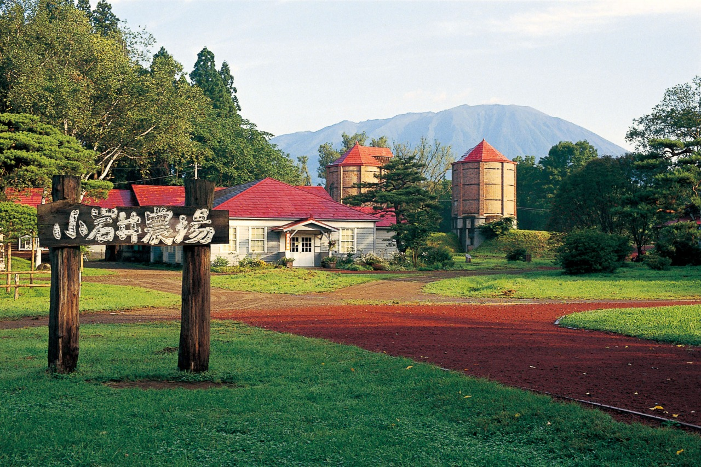

岩手県盛岡市から北西約12kmに位置し、岩手山南麓に約3,000ヘクタールの敷地面積を有する。 その敷地の3分の2は雫石町、残り3分の1が滝沢市に属する。その内の約40ヘクタールが観光エリア “まきば園”として開放されている。
岩手県盛岡市から北西約12kmに位置し、岩手山南麓に約3,000ヘクタールの敷地面積を有する。 その敷地の3分の2は雫石町、残り3分の1が滝沢市に属する。その内の約40ヘクタールが観光エリア “まきば園”として開放されている。
秀峰岩手山を背景に、小岩井農場の緑の大地に根を張る一本桜（樹種：エドヒガン）。 詳しい樹齢は不明ですが、明治40年代に植えられたと言われています。 一本桜があるこの草地は、今は農場の牛などの餌になる牧草を収穫する畑ですが、 昔は牛の放牧地でした。牛は暑さが苦手なので、夏の強い日差しから牛を守る 「日陰樹」として植えられたものです。
冬のまつりとしては本州最大規模で、約10日間の開催期間で30万人前後の人が訪れる。
入場無料。第45回目に当たる2012年は、2/4～2/12まで開催。
1968年に「小岩井かまくら」の名称で第1回が開催された。
夕暮れとともに12基のかまくらに火が灯り、雫石あねっこがワラグツ姿で登場し、
ジンギスカン鍋を入れて入場者にサービスした。1971年の第4回にて、
「小岩井かまくら」を「小岩井雪まつり」に名称変更して開催され、翌年の第5回から、
「小岩井雪まつり」から「岩手雪まつり」へと変わった
〒020-0507
岩手県岩手郡雫石町丸谷地
☏ 019-692-4321
fax 019-692-0303